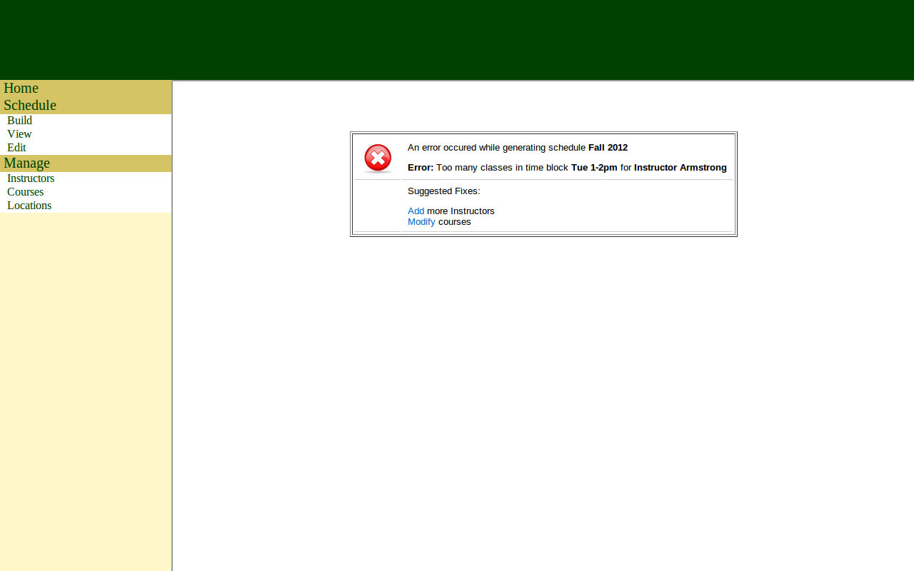

Schedule Generation Error | |||
|  | |||
| |||
| The schedule generation error page appears when an error occurs during schedule generation. An error message is displayed to the user along with links for suggested fixes. The user then selects the appropriate fix link to leave the error page. | |||
| Read more |